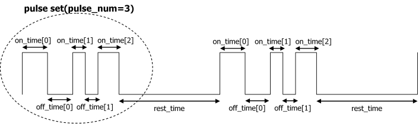

typedef struct
{
u32 pulse_num;
u32 rest_time;
u32 on_time[VIB_PULSE_NUM_MAX];
u32 off_time[VIB_PULSE_NUM_MAX];
u32 repeat_num;
} VIBPulseState;This function specifies the pulse vibration state.
A pulse consists of ON-OFF up to the number of times given by VIB_PULSE_NUM_MAX, which is called a pulse set, and a rest time where the pulse is always OFF. This allows the strongest vibrations to be generated using a standard pulse of 1.5 ms ON, 1.5 ms OFF, 1.5 ms ON.
The value of VIBPulseState must observe the following rules under hardware specifications.
The following rules are checked when VIB_StartPulse is called.

| pulse_num | Indicates the number of pulses generated by one pulse set. This must be more than or equal to one and less than or equal to VIB_PULSE_NUM_MAX. |
| rest_time | Length of rest between pulse sets. 1=0.1 milliseconds. |
| on_time | Length of each ON time. Use a value larger than 0. 1=0.1 milliseconds. |
| off_time | Length of each OFF time. Use a value larger than 0. 1=0.1 milliseconds. off_time[pulse_num-1] is not used. |
| repeat_num | Number of times to repeat the pulse set. 0 is used to specify endless pulsing. |
01/30/2006 Initial version.
CONFIDENTIAL